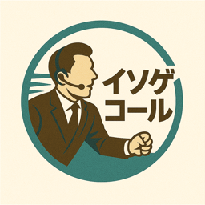

即時架電対応
問い合わせ受付後、すぐにお客様へ連絡。SMS＋メールと即架電を組み合わせ、競合より先に接触します。

イソゲコール賃貸仲介専門｜反響対応・追客代行
来店率を伸ばす反響対応代行「イソゲコール」。
賃貸専門のプロオペレーターが、あなたの代わりに即対応します。
＼ ただいま2週間無料お試しキャンペーン中／
その原因の多くは「初動の遅れ」と「夜間・定休の取りこぼし」。
部屋探しは仕事終わりや休日に動く人が多く、翌営業日では競合に流れてしまいます。
「外注しても効果が見えない」「日中の反響は自分たちでやれるから外注はコスパが悪い」——
だからイソゲコールは、“夜間・定休だけ” も任せられる分業型。必要な時間帯だけ、プロが反響を拾います。
自動追客システムを入れても、
アポ率は上がりましたか？
来店アポを決めるのは、結局“人の会話”。
温度感を測り、他物件を提案し、来店に背中を押す——そこはAIの自動応答では届きません。
WEB反響に特化した「アポ獲得サービス」。日中は社内・夜間定休は社外という分業で、来店率を向上させます。
問い合わせ受付後、すぐにお客様へ連絡。SMS＋メールと即架電を組み合わせ、競合より先に接触します。
営業時間外でも反響を逃しません。「夜間だけ」「定休日だけ」など、必要な時間帯だけの依頼が可能です。
賃貸業界に精通した専門オペレーターが対応。物件・条件の会話が自然で、お客様の温度感を逃しません。
お任せいただいても、十分なクオリティでアポイントを取得します。
通電率
通電→アポ率
対応反響アポ率
導入2ヶ月で成約数
※ 東京都心・先物件反響での実績。対象外顧客のアポは取得せず、来店またはオンライン面談につなげた数値です。改善幅は反響件数・媒体・運用環境により異なります。
即時SMS＋メール × 即架電。受付直後にお客様へ接触し、つながる確率を最大化します。
新規反響への架電と、掘り起こし（3〜7日）。どちらも先頭でプロが動きます。
営業時間外（夜間・定休）に入った新規反響へ、メール＋SMSのうえ即架電。来店アポにつなげます。
日中つながらなかった反響・未返信リードを最大7日間追客。埋もれた反響を再活性化します。
※ 対応結果・ヒアリング情報は、メール＋スプレッドシートで共有します。電話番号つきの反響に架電します。
導入前：反響数は店舗あたり300〜500本。一人あたりの反響が多く、対応が遅れていた。
導入後：全曜日の夜間＋掘り起こしを導入。営業が取得するアポ数はそのままに、イソゲ獲得分が純増。
導入前：定休日・定休前日からの反響の取りこぼしが課題だった。
導入後：火曜・水曜のみ導入。全体の来店率が8ポイントアップ。
ご希望に沿ったプランでお見積りします。ただいま2週間無料お試しキャンペーン中（利用期間：3ヶ月〜）。
夜間初期架電＋SMS＋即時ファーストメール＋掘り起こし（前日深夜＋当日日中）
月額30,000円〜
総反響100本目安（架電対応反響 30〜50件）
9時〜21時の全時間帯を対応
月額150,000円
総反響100本目安
全時間帯対応のオペレーション構築や、LINE構築・シナリオ設計など
要相談
ご要望に合わせて柔軟に設計
※ 目安料金です。詳細はヒアリングのうえお見積りいたします。
反響対応だけでなく、賃貸仲介の業務を幅広く支援します。
稼働時間内であればイソゲコールが対応し、それ以外の時間は貴社の番号へ転送します。
店舗・現地・オンライン（面談）で任意に設定可能です。
基本はお客様の要望で取得します。NG日程がある場合は、日程NGリストに登録して対応します。
「貴社名 カスタマーサポート」として名乗ります。
基本はファーストメールの送信のみです。セカンドメールなどは要相談となります。
SUUMO等の掲載情報をベースに会話します。詳細は営業担当よりご連絡する旨をお伝えし、LINEへ誘導します。
明日朝イチで営業担当よりご連絡する旨をお伝えし、店舗にはメールで共有します。
ご要望をお伺いし、カスタマイズ可能な範囲で実施します。内容によっては有料となる場合があります。
可能です。延長・短縮・曜日指定など、弊社営業担当へご相談ください。
現状の反響件数・対応体制をお伺いします。
運用イメージと費用をご提案します。
連携・トークスクリプトを準備し、2週間の無料お試しを実施します。
本番運用を開始。録音分析と改善FBで効果を伸ばします。
まずは2週間の無料お試しから。
下記フォーム・お電話・メールよりお気軽にお問い合わせください。
担当者より1〜2営業日以内にご連絡いたします。
ありがとうございました。